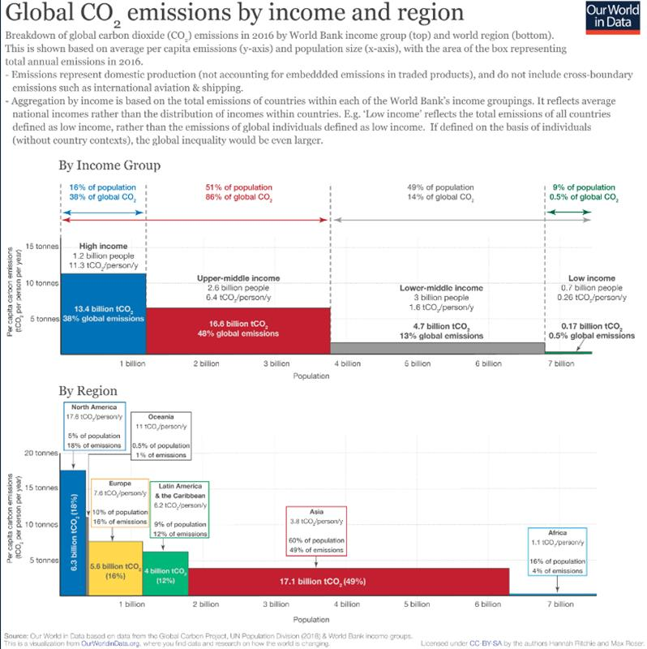
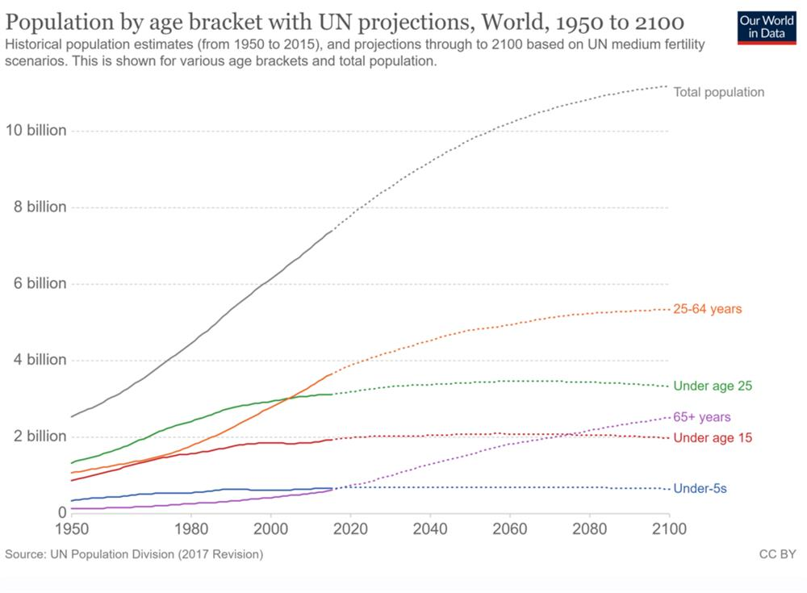
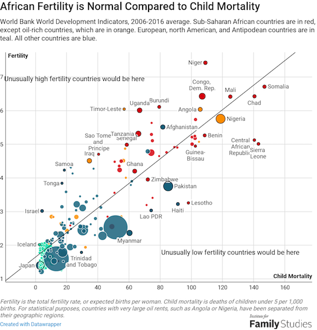
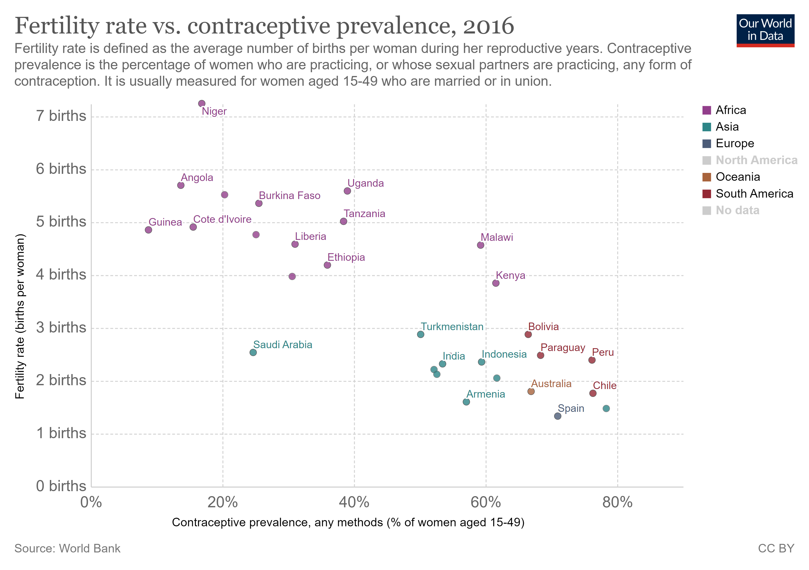

Published on 31 August 2020, 05:41. Updated on 31 August 2020, 09:59.
Why enabling all children to flourish helps tackle the climate crisis
by Bruno Jochum
SOURCE: GENEVA SOLUTIONS
In an important article published last week, Georges Monbiot from the Guardian describes how people in rich nations tend to blame all the world’s environmental problems on population growth. This “panic” reaction not only conveniently leaves the richer societies “off the hook” in regard to their unequivocal responsibilities, but is also off the mark in terms of understanding the underlying demographic trends. Rather than perceiving the number of new-born children as a threat, rich societies should fast reduce their own high level carbon emissions and acknowledge evidence highlighting the irreplaceable role of education, health and women empowerment in stablizing population and climate. In fact, asWHO and UNICEF have already put forth, supporting the well-being of children should be at the very centre of sustainability policies.
Why it matters: voices in favour of more radical population control measures are becoming more numerous as the climate crisis deepens – and not only in far right deep ecology circles. Population growth matters without doubt and is linked to various forms of environmental damage. The problem is that these voices often ignore the bigger picture. First, carbon emissions in very low-income countries, where high fertility rates are concentrated, are insignificant and will remain so for a long time. Second, if education and voluntary reproductive healthcare programmes were implemented at scale, it is estimated that about 85.4 gigatons of CO2 could be avoided by 2050, representing the second most impactful solution to keep temperature increase below 2°C. As Project Drawdown sums it up:
When levels of education rise (in particular for girls and young women), access to reproductive healthcare improves, and women’s political, social, and economic empowerment expand, fertility typically falls. Across the world and over time, this impacts population, [and] population interacts with the primary drivers of emissions: production and consumption, largely fossil-fueled.
Let us see why.
Hitting the nail on who emits what: the distribution of carbon emissions by income and region is without ambiguity. According to Our World in Data:
- The lowest income countries, representing 9% of the world population are responsible for only 0.5% of global emissions, while the richer half of the world population is responsible for 86% of emissions. No comment needed.
- On its side, Africa accounts for only 4% of global emissions. Even if its population triples by 2050 and the region’s income increases several fold, the continent will still account for only a very limited proportion of total greenhouse gas emissions.
For a larger version of this image: https://ourworldindata.org/co2-by-income-region

More babies? Wrong answer: contrary to what many people are believe, the world population is not going up because of more children being born. With falling fertility rates worldwide, their number is now relatively stable and expected to remain so.
In fact, the population is growing because of better health and people living longer. This is also true in Africa and the Indian subcontinent, the only two regions in the world where extra population growth is expected over the 21st century.

Late Hans Rosling, a Swedish public health professor and founder of the Gapminder Foundation, visualized in simple terms the forecast structure of the world population should it reach 11 billion by 2075 as predicted. As you may observe, the increase in the number of adults and elderly people explains all of the population growth.
A recent study published in the Lancet in July goes even further: because of a falling global fertility rate mainly due to the pace of educational attainment, the world population may actually peak earlier at 9.7 billion in 2065 and then start declining, losing a billion inhabitants by 2100. India in particular may reverse its current population growth trend by mid-century, and then start shrinking like China.
What causes fertility rates to decline so rapidly? Three key factors play a role here:
- the evolution of child mortality, itself dependant on access to mother and child care and education. As the graph below illustrates, fertility rates are closely correlated to child mortality rates and African fertility rates historically follow exactly the same pattern as rich Western countries did in the past.

-
equal access of women to education is remarkably correlated to the number of children per woman. In just one generation, the number of children can drop from 6 to 3 or 2 when mass education is provided to both girls and boys.
-
easy access to contraceptives and voluntary reproductive health which allows women and men to be in better control of pregnancies and births.

The bottomline: Education for all combined with mother and child healthcare programmes are so efficient they should be boosted as a means to hasten thedemographic transition and deliver several goals simultaneously: the well-being of children, equality of rights between women and men, poverty alleviation and…climate stability. Public health services and non-governmental organizations in low income countries also deserve to be recognized as contributing to climate action, as a complement to more classic interventions in the energy, land and agricultural sectors.
At the end of the day, strict birth control measures - especially when they are coercive - should not only be discarded because they miss the point of what already works and is at hand, they also represent a kind of fundamental disrespect for universal human rights. As Project Drawdown concludes:
The topic of population raises the troubling, often racist, classist, and coercive history of population control. People’s choices about how many children to have should be theirs and theirs alone. And those children should inherit a livable planet.
#Unicef #education #demography
SOURCE: GENEVA SOLUTIONS